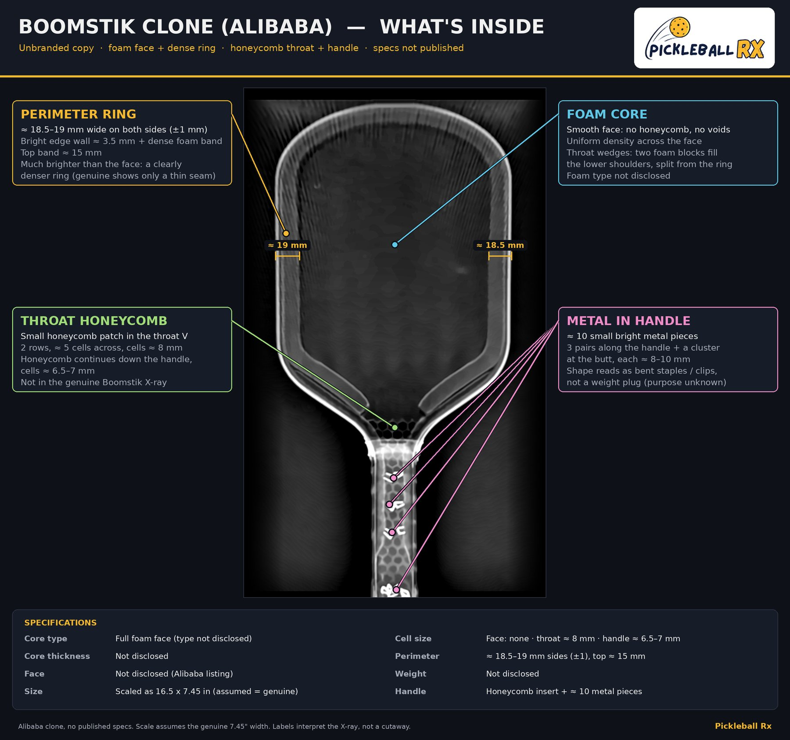
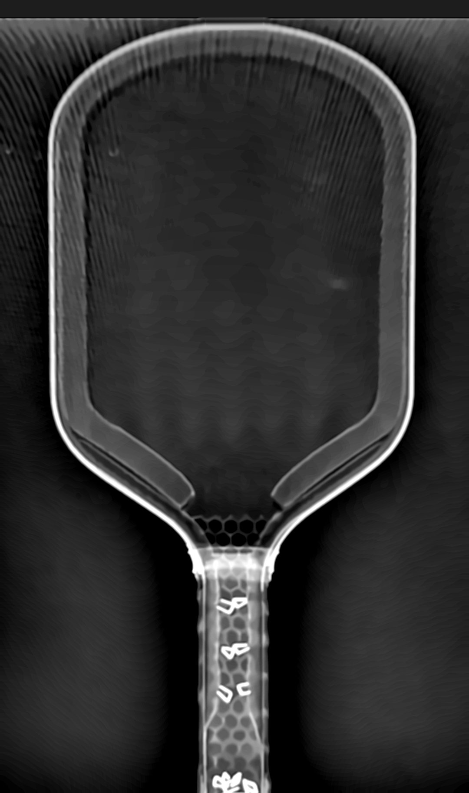

X-Ray Rx / Unbranded
Boomstik clone (Alibaba) review: X-ray and lab results
Full foam face (type not disclosed). ≈ 18.5–19 mm sides (±1), top ≈ 15 mm.
What's inside
| Core | Full foam face (type not disclosed) |
| Cells | Face: none · throat ≈ 8 mm · handle ≈ 6.5–7 mm |
| Perimeter | ≈ 18.5–19 mm sides (±1), top ≈ 15 mm |
| Thickness | Not disclosed |
Quick take
The Boomstik clone (Alibaba) is a pickleball paddle from Unbranded. Our X-ray shows the core: Full foam face (type not disclosed). Perimeter: ≈ 18.5–19 mm sides (±1), top ≈ 15 mm. Face: Not disclosed (Alibaba listing). Weight: Not disclosed.
The X-ray
Labels are our read of the X-ray, not a cutaway. Measurements are approximate. Disclaimers.


Clean X-ray
The same X-ray with no labels, so you can read it yourself.


Specs
| Core type | Full foam face (type not disclosed) |
|---|---|
| Cell size | Face: none · throat ≈ 8 mm · handle ≈ 6.5–7 mm |
| Core thickness | Not disclosed |
| Perimeter | ≈ 18.5–19 mm sides (±1), top ≈ 15 mm |
| Face | Not disclosed (Alibaba listing) |
| Weight | Not disclosed |
| Size | Scaled as 16.5 x 7.45 in (assumed = genuine) |
| Handle | Honeycomb insert + ≈ 10 metal pieces |
Specs: brand and retailer listings (sources are on the labeled X-ray). X-ray interpretation, not a cutaway. Ring widths are measured from the X-ray, so they are estimates (≈).